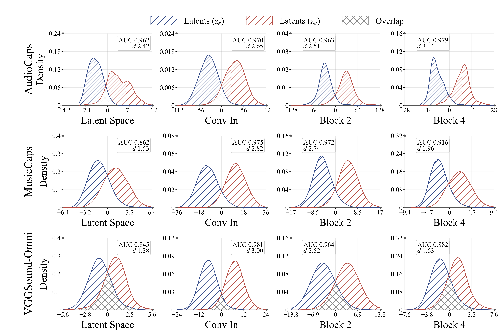
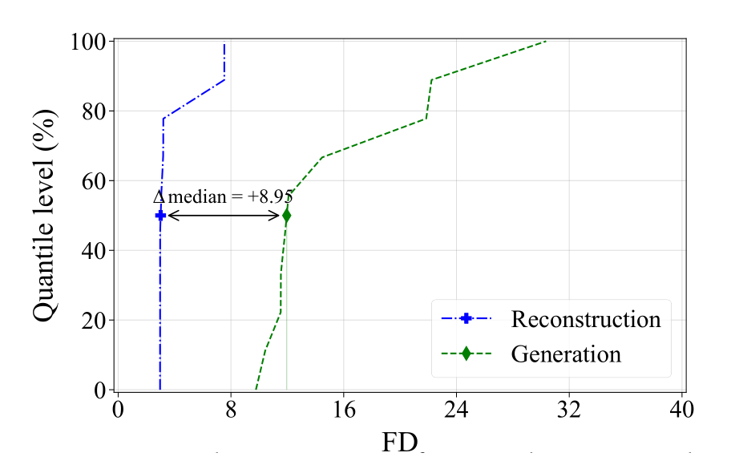
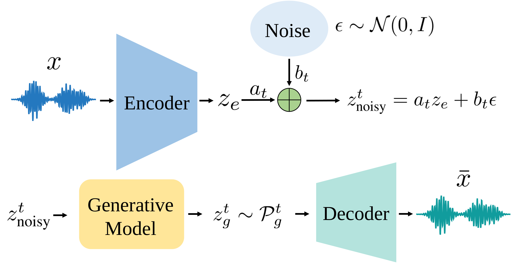
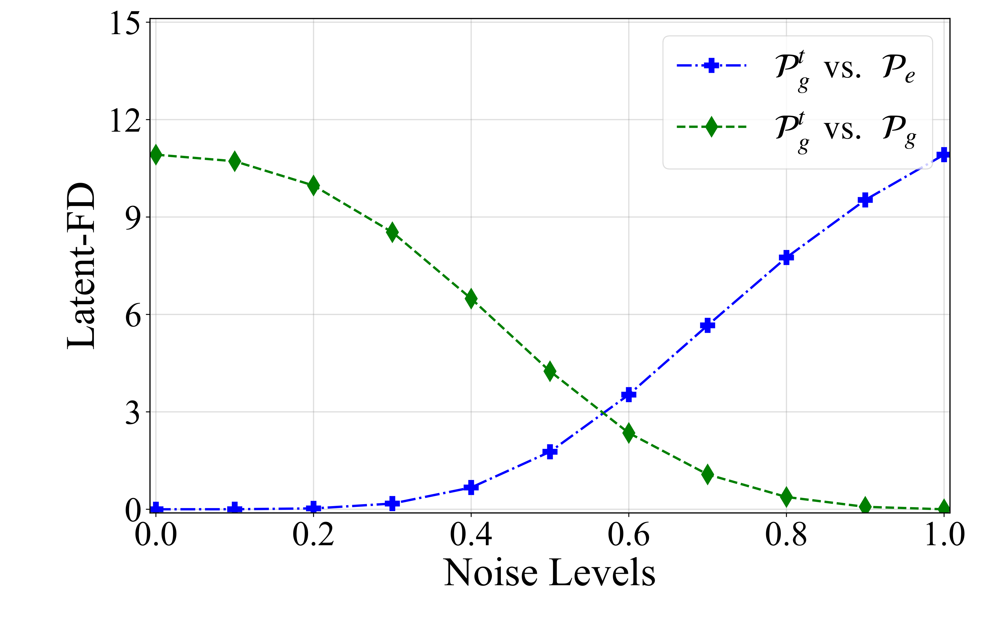
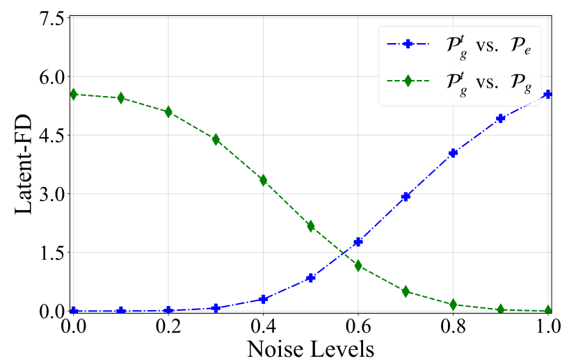

Keep the source pair
Encode a waveform with the pretrained, frozen codec encoder.
in Latent Audio Generative Models
1University of Toronto2Vijil*Equal contribution
In our paper, we show that AudioGAR constructs intermediate latents between reconstruction and generation, retaining source correspondence at lower noise levels to support generation-aware codec decoder adaptation.
Latent audio models learn in two stages. A codec learns to reconstruct audio, then a generative model learns to produce latents in the codec’s space. The decoder trains on encoder-induced latents, but receives generator-produced latents at inference.
For a source waveform x, reconstruction decodes ze = Eθ(x) ∼ Pe. Generation decodes zg ∼ Pg, produced from noise and a text caption. When Pe ≠ Pg, the decoder faces a train-generation mismatch.
Strong reconstruction quality therefore need not transfer to generated audio. AudioGAR adapts the decoder to latents that incorporate the generative process while preserving a source waveform for supervision.
We construct encoder and generator latents from matched audio-caption examples in AudioX. Linear Discriminant Analysis (LDA) finds a direction that separates the two collections, both at the decoder input and within its feature spaces.

Latent-space AUC reaches 0.962 on AudioCaps, 0.862 on MusicCaps, and 0.845 on VGGSound-Omni. Separation persists after the latents enter the decoder, including Conv In, Block 2, and Block 4.
We compare reconstructed and generated audio across 29 model-dataset combinations. FD uses PANNs embeddings; FAD uses VGGish embeddings. The prefixes r and g denote reconstruction and generation. Lower values indicate closer agreement with the reference audio distribution.
| Dataset | Model | rFD ↓ | gFD ↓ | rFAD ↓ | gFAD ↓ |
|---|---|---|---|---|---|
| AudioCaps | AudioLDM-2-Base | 3.19 | 11.54 | 1.31 | 2.04 |
| AudioLDM-2-Large | 3.20 | 11.53 | 1.31 | 1.86 | |
| AudioLDM-S-Full | 3.05 | 21.85 | 1.27 | 4.79 | |
| AudioX | 7.53 | 11.83 | 3.49 | 1.61 | |
| Stable Audio Open | 7.53 | 30.36 | 3.49 | 3.41 | |
| Tango | 2.97 | 14.47 | 1.14 | 1.52 | |
| Tango Full | 2.97 | 22.23 | 1.14 | 4.10 | |
| Tango Full (FT AudioCaps + MusicCaps) | 2.97 | 9.77 | 1.14 | 2.59 | |
| Tango Full (FT AudioCaps) | 2.97 | 10.42 | 1.14 | 2.39 | |
| Tango (AF-AC, FT AudioCaps) | 2.97 | 12.08 | 1.14 | 2.55 | |
| MusicCaps | AudioLDM-2-Large | 2.20 | 18.84 | 0.66 | 2.51 |
| AudioLDM-2-Base | 2.20 | 21.71 | 0.66 | 3.82 | |
| AudioX | 4.31 | 9.56 | 0.95 | 1.60 | |
| Stable Audio Open | 4.31 | 37.72 | 0.95 | 3.42 | |
| Tango | 2.18 | 46.80 | 0.56 | 5.64 | |
| Tango Full | 2.18 | 35.67 | 0.56 | 5.78 | |
| TangoMusic | 2.04 | 15.20 | 0.42 | 1.85 | |
| Tango Full (FT AudioCaps + MusicCaps) | 2.18 | 20.43 | 0.56 | 3.61 | |
| VGGSound-Omni | AudioLDM-2-Base | 1.64 | 10.03 | 0.49 | 1.72 |
| AudioLDM-2-Large | 1.64 | 9.93 | 0.49 | 1.49 | |
| AudioLDM-S-Full | 1.63 | 18.78 | 0.50 | 3.44 | |
| AudioX | 3.66 | 9.67 | 1.91 | 1.74 | |
| Stable Audio Open | 3.66 | 26.07 | 1.91 | 2.68 | |
| Tango | 1.62 | 24.03 | 0.50 | 2.88 | |
| Tango Full | 1.62 | 19.01 | 0.50 | 3.69 | |
| TangoMusic | 1.62 | 13.43 | 0.50 | 2.36 | |
| Tango (AF-AC, FT AudioCaps) | 1.62 | 11.72 | 0.50 | 1.46 | |
| Tango Full (FT AudioCaps + MusicCaps) | 1.62 | 13.26 | 0.50 | 2.28 | |
| Tango Full (FT AudioCaps) | 1.62 | 19.12 | 0.50 | 3.06 |
All 29 comparisons from the supplied table (paper Table 2). Blue columns show FD; green columns show FAD. FT denotes fine-tuning. Model names link to their checkpoints.
rFD is lower than gFD in all 29 comparisons; rFAD is lower than gFAD in 26. For example, Tango on MusicCaps has rFD 2.18 and gFD 46.80. AudioX on AudioCaps is an FAD exception, with rFAD 3.49 and gFAD 1.61.
The AudioCaps quantile comparison checks whether a few models drive the FD gap. It compares the empirical reconstruction and generation distributions across the evaluated models.

The curves remain separated across the full quantile range. The gap alone does not isolate the decoder’s contribution, because generation also depends on the latent generator. Combined with the LDA evidence, it motivates adapting the decoder to generation-relevant inputs.
Fully generated latents lack a paired source waveform. AudioGAR starts from an encoded waveform, adds controlled noise, and denoises through the frozen generative model. Lower-noise outputs retain the correspondence needed for paired supervision.
We first construct intermediate latents, then use them as decoder inputs while supervising against the original audio. The codec encoder and latent generator remain frozen.

The relative noise level ηt = bt / (at + bt) controls the transition. ηt = 0 recovers reconstruction; ηt = 1 recovers generation from pure noise. Our experiments use at = cos(πt/2) and bt = sin(πt/2).
Encode a waveform with the pretrained, frozen codec encoder.
Mix the encoder latent with Gaussian noise using the diffusion schedule.
Denoise with the frozen model and the caption paired with the source audio.
Decode the AudioGAR latent and apply the original codec’s decoder-side objective.
LAudioGAR = Lcodec(x, Dϕ(zgt))
We retain the codec’s reconstruction and adversarial objectives and their loss weights. AudioX updates only the codec decoder; TangoMusic jointly updates the VAE decoder and HiFi-GAN vocoder. Both keep the encoder and latent generator frozen.
AudioGAR improves generation by adapting the decoder to generation-relevant latents with paired source supervision.
Latent-FD compares empirical means and covariances under a Gaussian approximation, directly in latent space. We measure the distance from each intermediate distribution Pgt to both the encoder endpoint Pe and generator endpoint Pg.

(a) AudioCaps
(b) MusicCapsOn both datasets, increasing noise moves AudioGAR latents farther from Pe and closer to Pg. Lower noise preserves source correspondence; larger noise moves closer to generation while weakening that correspondence.
AudioGAR improves FD and FAD on AudioX for both audio and music generation. It also transfers to TangoMusic’s decoder and vocoder pipeline. The inference pipeline uses the adapted weights with no additional inference cost.
| Dataset | Model | gFD ↓ | gFAD ↓ | KL ↓ | IS ↑ | PC ↑ | PQ ↑ |
|---|---|---|---|---|---|---|---|
| AudioCaps | AudioX | 11.83 | 1.61 | 1.31 | 12.47 | 3.16 | 5.73 |
| AudioX + AudioGAR | 11.62 | 1.34 | 1.29 | 12.06 | 3.11 | 5.73 | |
| MusicCaps | AudioX | 9.56 | 1.60 | 1.00 | 3.65 | 4.78 | 6.61 |
| AudioX + AudioGAR | 8.33 | 1.10 | 0.99 | 3.59 | 4.75 | 6.56 | |
| TangoMusic | 15.20 | 1.85 | 1.09 | 2.85 | 5.62 | 7.22 | |
| TangoMusic + AudioGAR | 14.25 | 1.47 | 1.09 | 2.83 | 5.61 | 7.16 |
Subset of paper Table 3 using our reproduced baselines. Shading identifies AudioGAR rows. KL: Kullback-Leibler divergence; IS: Inception Score; PC: Production Complexity; PQ: Production Quality. FD and FAD measure distributional agreement; PC and PQ use Meta Audiobox Aesthetics.
On MusicCaps, AudioGAR reduces AudioX FAD by 31.3% and TangoMusic FAD by 20.5%. IS and PC decline slightly, and PQ stays unchanged or declines slightly; the main gains are in FD and FAD.
| Training | H100-equivalent hours | Relative cost | Audio hours | Relative data |
|---|---|---|---|---|
| Original AudioX | 4,000 | 100% | 33,052.3 | 100% |
| AudioGAR adaptation | 10.3 | 0.26% | 508.3 | 1.5% |
Adaptation runs for 100k steps on one NVIDIA H100 80GB GPU. Cost and data percentages use original AudioX training as the denominator. The 10.3 hours are the adaptation cost, additional to pretrained AudioX.
We keep the adaptation procedure fixed and replace encoder latents with AudioGAR latents. Fine-tuning on encoder latents already improves FD and FAD, but AudioGAR yields larger gains on both datasets.
| Decoder setting | AudioCaps FD ↓ | AudioCaps FAD ↓ | MusicCaps FD ↓ | MusicCaps FAD ↓ |
|---|---|---|---|---|
| Pretrained AudioX | 11.83 | 1.61 | 9.56 | 1.60 |
| Adapt with encoder latents ze | 11.72 | 1.55 | 8.87 | 1.38 |
| Adapt with AudioGAR latents zgt | 11.62 | 1.34 | 8.33 | 1.10 |
FD and FAD subset of paper Table 4. All values evaluate generated audio; lower is better.
On MusicCaps, replacing encoder latents with AudioGAR latents lowers FAD from 1.38 to 1.10. This comparison isolates the benefit of generation-aware inputs beyond decoder fine-tuning alone.
@article{fang2026audiogar,
title = {AudioGAR: Bridging Reconstruction and Generation in Latent Audio Generative Models},
author = {Fang, Xianghong and Tay, Geeyang and Ma, Wentao and Rudner, Tim G. J. and Kong, Dehan},
journal = {Arxiv},
year = {2026}
}